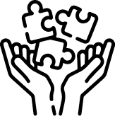
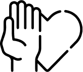
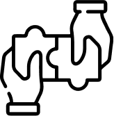
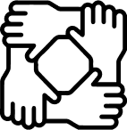

VALORES
Transparencia

Integridad

Honestidad

Colaboración

La Asociación Educativa Convivencia en la Escuela (AECE), es una
institución civil sin fines de lucro legalmente constituida
desde el año 2013, especializada en prevención de la violencia
escolar y reconocida por el Estado a través de la Ugel 07
mediante Resolución Directoral N° 7312-2018 gracias a la
efectividad de su trabajo en la promoción y desarrollo de
estrategias para mejorar el clima escolar y la convivencia
pacífica.
Inscrita en el Registro Nacional de Voluntariado del
Ministerio de la Mujer y Poblaciones Vulnerables con código
1820555509643, promueve diversas iniciativas sociales para
establecer la convivencia pacífica entre estudiantes de
instituciones educativas públicas y privadas del país mediante
un voluntariado que procura el bienestar socio emocional de
niños y adolescentes.
Formar ciudadanos comprometidos con la paz escolar que procuren una convivencia pacífica e inspiren cambios sustanciales basados en el buen trato y la valoración del ser humano, promoviendo una sociedad sin ningún tipo de violencia contra niños y adolescentes.
Al 2030 niños y adolescentes de escuelas intervenidas por nuestra institución en el país serán personas adultas de bien, conformarán una sociedad libre de violencia y basada en una cultura de paz.
Desarrollo ininterrumpido de acciones orientadas a la investigación y ejecución de propuestas para la intervención efectiva en las escuelas con alto índices de violencia del sector público durante ocho años
Profesionales expertos en temas de violencia, bullying, ciberbullying, acoso escolar, mediación escolar forman parte de nuestro staff de docentes.
Contamos con un consejo consultivo internacional con destacados especialistas de Ecuador, México, Uruguay y Venezuela.
Nuestra Institución ha sido reconocida por el MINEDU como institución líder en la aplicación de programas de desarrollo socio emocional en contra de la violencia escolar
Somos ganadores de premios nacionales e internacionales otorgados por las OEA, Voluntariado por el Bicentenario, Rotary club Internacional.
Contamos con convenios para a formación académica y desarrollo de proyectos a nivel nacional con la OEI Organización de estados iberoamericanos.
Desde el 2014 en alianza con las principales universidades del país, Convivencia en la Escuela desarrolla este programa con jóvenes voluntarios quienes promueven la sana convivencia de los niños y adolescentes en el aula.
Mediante un enfoque de pares, los jóvenes universitarios forman estudiantes del nivel secundaria como agentes de cambio para impactar directamente en las instituciones educativas a las que pertenecen promoviendo acciones para la convivencia pacífica y el buen trato entre escolares de secundaria.
Nuestro programa no es asistencial ni atiende casos de bullying participación de toda la comunidad educativa. Mediante un efecto multiplicador su metodología contempla un proceso en forma escalonada que parte desde un trabajo profesional directo hasta llegar a las réplicas internas dirigidas por los propios escolares.